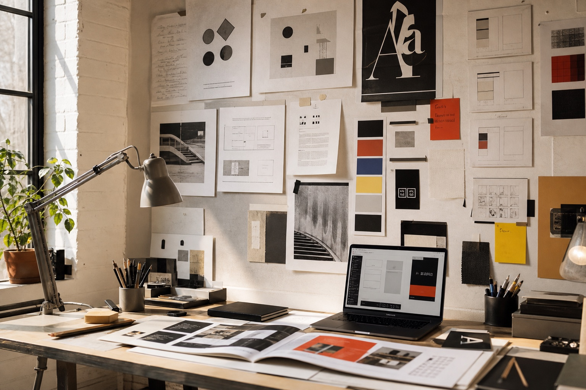
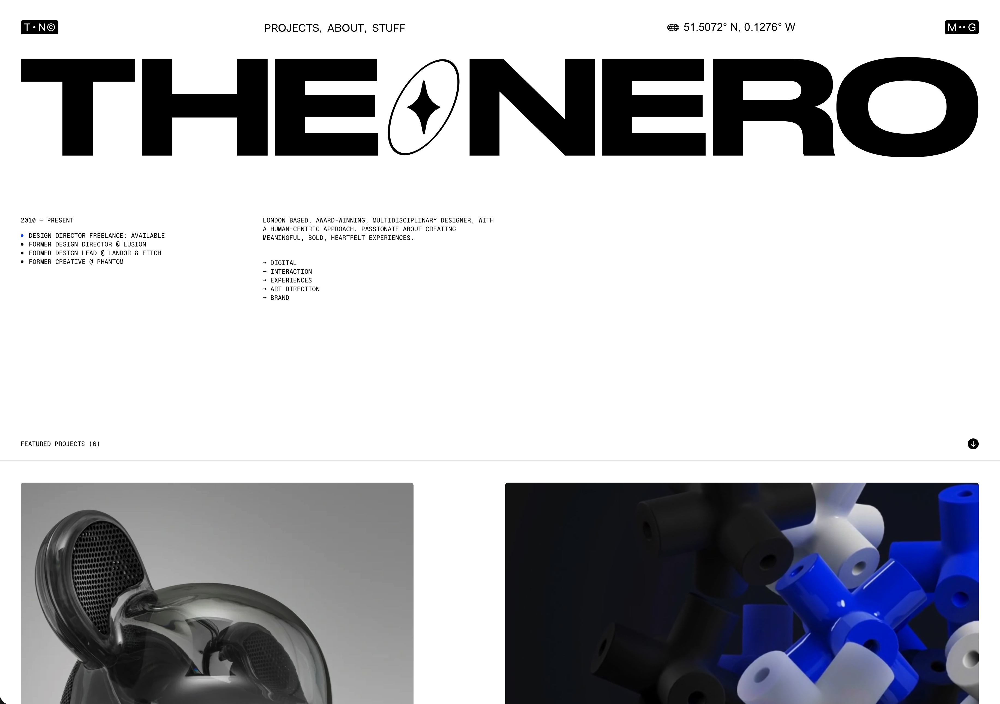
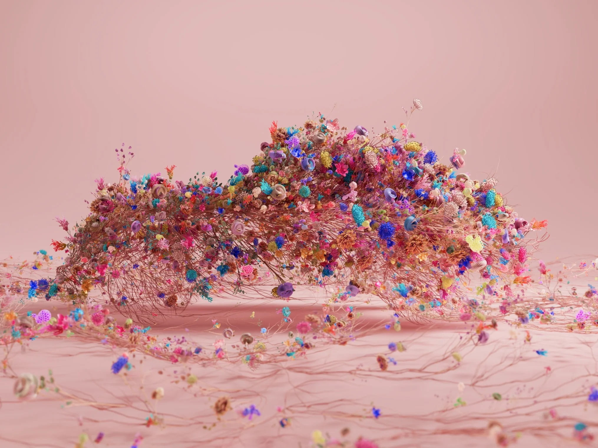
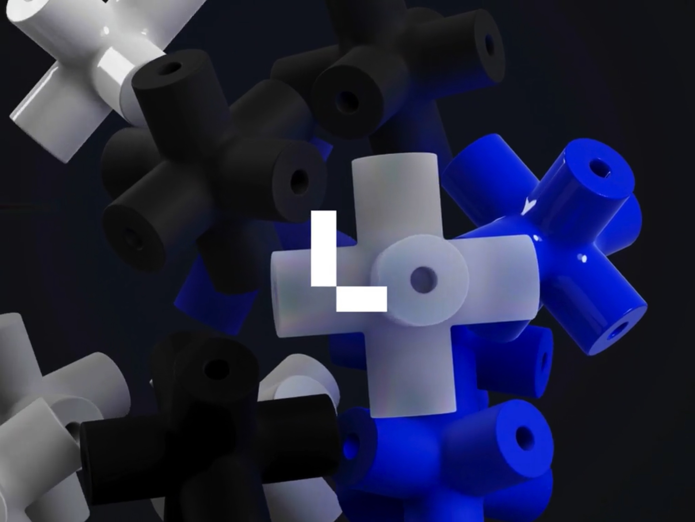
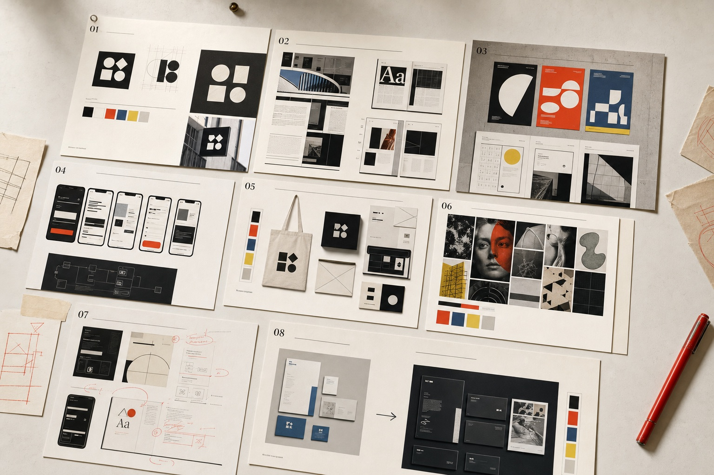

Discover
Understand the brief, audience, market and problem.
For Vicky Pancaldi · Design Residency
12 weeks of applied graphic design, brand thinking, digital craft and AI-assisted creative practice.
A practical studio-led immersion for Vicky Pancaldi: not a theoretical course, but a sequence of real briefs, daily critique, visual research, craft exercises and portfolio-building projects.

Course principle
Every project follows the same professional process so the rhythm becomes instinctive: understand the problem, make options, review honestly, sharpen the work and explain the idea clearly.
Understand the brief, audience, market and problem.
Gather references, define the angle and create a creative hypothesis.
Generate options before committing to software.
Build the strongest idea with craft and discipline.
Review work honestly and identify what is weak.
Improve hierarchy, detail, consistency and clarity.
Explain the idea, the process and the final design.
Weekly rhythm
The structure repeats every week, turning research, sketching, production, critique and portfolio documentation into a normal working cadence.
Read the brief, define the audience, map references and collect visual evidence.
Build creative territories, thumbnails and early routes before software work begins.
Move into Figma, Illustrator or Photoshop only when the idea has a direction.
Tighten type, spacing, colour, hierarchy and prepare a coherent presentation.
Review the work, note the gaps and archive process for the final case study.
The rhythm repeats so the process becomes instinctive.
Visual energy
Generated imagery gives the plan a more aspirational tone: not classroom graphics, but process walls, dark digital craft, AI direction, critique notes and finished portfolio evidence.



12-week timeline
Each week has a theme, a focused skill set, a real-world brief and an output that can either become a case study or feed a stronger final project.
Seeing like a designer.
Reduction, memory and meaning.
Type as structure and voice.
From logo to system.
Conceptual communication.
UX/UI foundations.
With Oriana Gaeta and Marco Grimaldi.
Making brands move.
Directing AI, not outsourcing taste.
Strategy, diagnosis and transformation.
Turning work into evidence.
Present like a designer.
Portfolio outcomes
The residency is judged by finished work. Each project is designed to prove a clear discipline, a professional process and a polished final output.

Independent coffee roastery.
Proves: sketching, symbol design, typography and packaging craft.
Deliverables: logo system, variants, construction grid and mockups.
Community project, charity or workshop brand.
Proves: brand world, visual language, applications and tone.
Deliverables: brand sheet, poster and social templates.
Culture magazine or zine.
Proves: type hierarchy, pacing and layout craft.
Deliverables: cover, contents, 3 spreads and type specimen.
Event or social cause.
Proves: concept, composition, copy and campaign thinking.
Deliverables: 3 posters, social assets and rationale.
Workshop and event booking product.
Proves: user flow, wireframes, interface design and prototyping.
Deliverables: map, screens, components and clickable prototype.
Landing page or interactive brand story.
Proves: responsive UI, interaction design and motion thinking.
Deliverables: homepage design, interaction notes and storyboard.
Fictional brand or product launch.
Proves: AI prompting, art direction, selection and human refinement.
Deliverables: prompt log, image direction board and campaign visuals.
Real small business transformation.
Proves: diagnosis, strategy, before/after thinking and system logic.
Deliverables: audit, identity system, presentation and mockups.
Illustrated references
These CSS-only reference cards set the studio language: grids, sketches, critique walls, digital craft, AI direction and portfolio storytelling.
Structure, discipline, hierarchy.
Reduction, repetition, memory.
Critique, iteration, judgement.
UX/UI, systems, interaction.
Identity, tone, consistency.
AI direction, curation, refinement.
Digital art direction, motion, immersive storytelling.
Storytelling, evidence, presentation.
Tools
The tool enters after the design problem is clear. Software supports taste, judgement, process and craft; it does not replace them.
Daily practice
The residency builds visual judgement through short, repeatable exercises that make the eye sharper and the hand faster.
How progress is judged
Progress is measured by clarity, control, distinctiveness, polish and whether Vicky Pancaldi can explain the design decisions behind the work.
Final presentation
At the end of 12 weeks, Vicky Pancaldi presents her portfolio as if pitching for a junior design role. The presentation includes the brief, research, sketches, iterations, final work and rationale for each of the 8 projects.